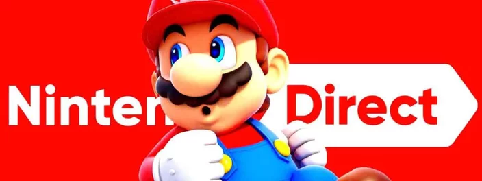
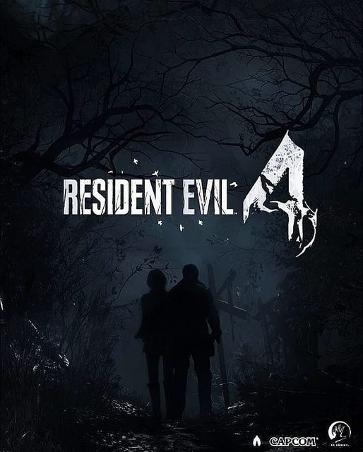

Novo Nintendo Direct pode acontecer em setembro, aponta rumor
Postado dia 31/08/2022 por MARCELO JUNIOR A Nintendo estaria preparando uma nova edição do Nintendo Direct para este mês de setembro, segundo afirma o jornalista e insider Jeff Grubb, do GamesBeat. A informação foi revelada em transmissão ao vivo na noite desta terça-feira (30).
De acordo com o jornalista, ele está completamente certo de que a transmissão está sendo preparada e deve focar em novidades de parceiros de publicação para Nintendo Switch, mas também pode incluir algumas surpresas.
As fontes dão conta de que remasterizações de The Legend of Zelda: Twilight Princess e The Legend of Zelda: Wind Waker, que já são especuladas há bastante tempo, estariam entre as possíveis revelações. Ele também cita que ouviu a respeito de Metroid Prime Remaster, que celebraria seu 20º aniversário e prepararia o terreno para o aguardadíssimo Metroid Prime 4.
Outra expectativa, ainda que remota, é que a empresa possa finalmente revelar o nome oficial da sequência de The Legend of Zelda: Breath of the Wild, que foi adiada para a primavera americana de 2023 — que equivale ao nosso outono, entre março de junho.
Além disso, alguns fãs mais atentos também observaram que a página oficial do Nintendo Direct, quando pesquisada no Google, supostamente passou por uma atualização há quase uma semana. O entendimento é que isso indicaria um anúncio iminente por parte da empresa.
No entanto, a Nintendo ainda não se pronunciou oficialmente nas redes sociais e os seus anúncios de eventos costumam acontecer às vésperas. Nos últimos meses, a empresa realizou apenas um Nintendo Direct Mini, além de transmissões dedicadas a Xenoblade Chronicles 3 e Splatoon 3.
Novos RUMORES sobre RESIDENT EVIL 4 REMAKE foram publicados no Reddit
Postado dia 03/09/2022 por MARCELO JUNIOR "Eu sou Kane (nome fictício), e sou um escritor de IGN e tenho fontes que foram convidadas pela Capcom para testes iniciais:
- O remake terá cenários com Leon Ada e Luis.
- O personagem de Krauser é totalmente retrabalhado e reimaginado e sua forma mutante terá 5 estágios semelhantes a William Birklin.
- O remake terá papéis de perseguidores, mas cada IA tem habilidades diferentes. Toda vez que você danificar o Doutor Salvador, ele sofrerá uma mutação ainda maior e sua máscara se desfará lentamente e ele terá seu próprio chefe lutando na ilha.
- Bitores Mendez pode chamar aldeões para caçá-lo e sua IA funciona semelhante ao Sr. X
-Verdugo pode ficar invisível Para pegar o jogador desprevenido.
- Personagem de Ashley e sua IA são melhoradas Mais Ashley pode distrair os inimigos e empurrar os inimigos para fora dela e ela pode carregar pequenas armas corpo a corpo e o remake fará você começar com ela no início em vez de Leon.
- A casa de Bitores Mendez será expandida e o jogador terá que resolver quebra-cabeças em sua casa e encontrar uma chave para escapar da casa e Bitores Mendez perseguirá você em sua casa e a casa de Bitores levará elementos da mansão Spencer
- O Mercador terá mais conhecimento e história de fundo e interagirá com leon mais semelhante ao duque.
- O segmento da ilha é menos ação e será mais focado no laboratório e terá novas locações como uma fábrica e prisões
- Dois El Gigante foi cortado e deixou um na vila, mas desta vez dentro de uma caverna.
- Haverá um arquivo descrevendo o post de Leon e Claire em Raccoon City, que eles mantiveram contato após Rockfort Island
- Os trajes alternativos retornarão, Leon terá seu traje de RPD e Mafia, mas também com um terceiro traje com camisa cinza e jeans (traje civil)
- Wesker aparecerá no final, mas muito brevemente
- A trilha sonora da vila é muito mais assustadora que a original, embora um pouco semelhante
- O jogo é um pouco mais longo que o Village, mas não espere a mesma duração do original.
- Leon é descrito como tendo ficado profundamente chocado com Raccoon City, e ele não sabe que Ada sobreviveu, então o encontro deles será muito mais chocante para ele."